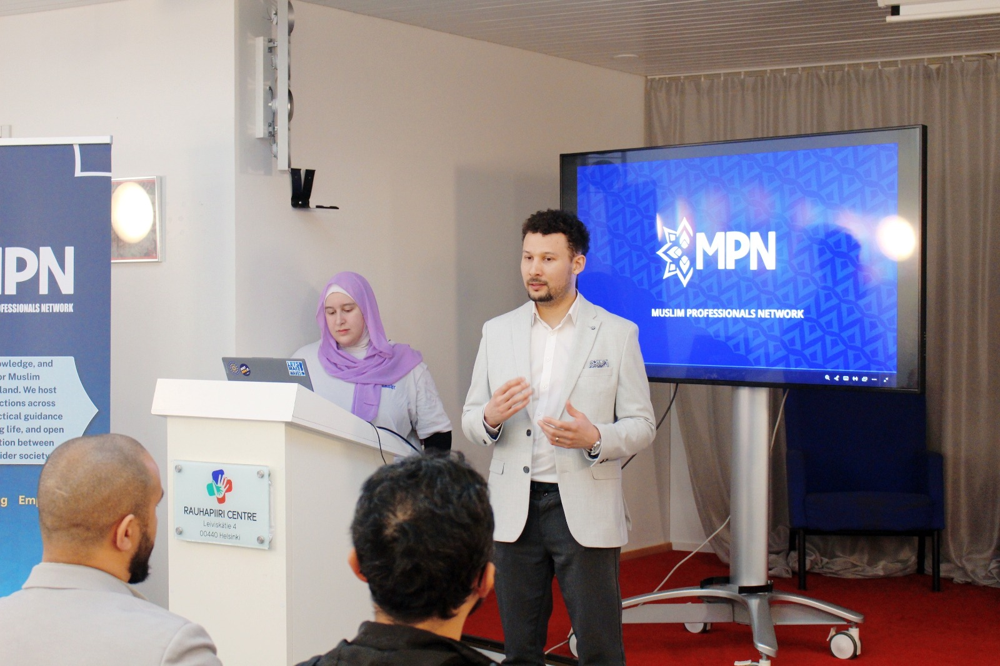
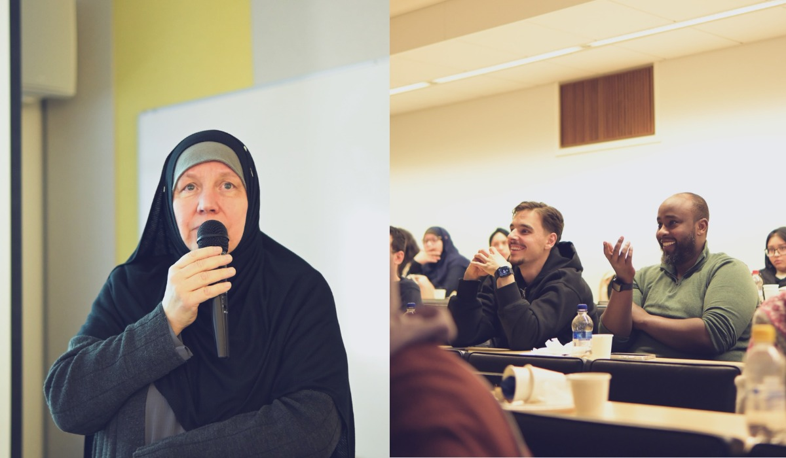
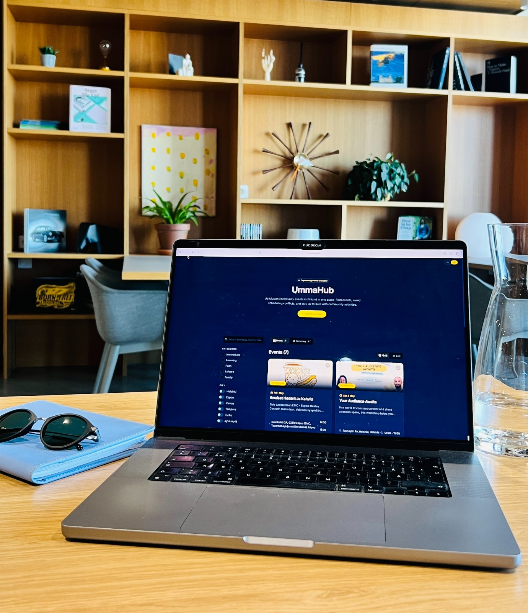

Bismillah. Collaboration and people coming together, that's where the magic happens. This is why we were enthusiastic to organize an event together with Karamah Collective. Not least because the topic deserved a spotlight: what every Muslim should know when losing a loved one.
The event ended up being called The Last Chapter before Hereafter. It took almost a year from the first meeting with Karamah Collective to bring this event into reality in the beginning of this year. Alhamdulillah, the event went well. Once again we tried out new things like selling online tickets and offering the chance to participate via live stream.
Soon after The Last Chapter event, Muslim Professionals Network ry was officially established as an NGO. Until then we had been doing our thing under Nuoret Muslimit ry. Barakallahu feekum, big thanks to NUMU for all the support.
From events to meaningful projects
Becoming our own NGO was a big step in a direction where we can build meaningful projects in addition to just organizing events. We made partnerships with Rauhapiiri ry and HUB Finland, and through them we've had the chance to use their venues as the backdrop for our events.
Cooperation with both parties has been seamless and I can definitely recommend them if you're planning to host an event.
In April we also got our first sponsor, Dr. Yusuf Guled with Kanzi Coaching. Yusuf has been an important part of MPN since day one by sharing his expertise and hosting beneficial workshops where people get to learn, share, and get inspired.
"This is what MPN is all about: collaboration and sharing."
We will keep doing that through our live events that will continue happening regularly, inshallah.

Three digital platforms to keep on your radar
Learning and sharing has moved more and more online, and I want to highlight three digital platforms that hopefully will empower and encourage our Ummah here in Finland to come together and build useful things.
UmmaHub, powered by MPN and built for the Finnish Ummah
The idea for UmmaHub came about when we were planning the event with Karamah Collective. The first step to move an event from idea to reality is to set the date. When we had agreed on one, I soon noticed it would fall on the same day as the traditional Ramadan Rieha, which would certainly attract a similar audience.
We are still such a small Ummah that it doesn't make sense to compete for the same crowd on the same day. We didn't hesitate to move our event by one week.
The vision of UmmaHub is to have all Muslim community events in one place. This way organizers can avoid unnecessary overlapping when setting their event dates, and people looking for likeminded people and Muslim friendly events can find them easily.
See the site in action in Finnish or English through the resource links below.

Halal Finder by Karamah Collective
This was very much needed. Imagine having a map of your hometown with locations of masjids, halal shops, and restaurants. Now you can stop imagining and open the map directly.
I hope this will be kept up to date as a community effort so we all can benefit.
Diwan App by Diwan HQ
Modern social media is not always the best place to be for a Muslim. Luckily there is an alternative called Diwan. It is a private platform for the conversations and connections that don't happen on traditional social media: local events, mutual aid, and a feed that isn't driven by algorithms fueled by the lowest common denominators.
Currently it is invite only. Check the platform link below to learn more and apply.
Upcoming Diwan events
Speaking of Diwan, MPN is a partner in the upcoming Diwan Hackathon on Saturday 13 June at Aalto Design Factory: the largest hackathon in the Nordics aligned with Islamic values. The vision is to bring together 50 elite Muslim developers, designers, and entrepreneurs to strengthen cross-border community bonds.
MPN is also collaborating with Diwan to host a Hackathon side event on 12 June, where we are honoured to have Drilon Jaha, CTO of Bayyinah, give a workshop on building software with AI. The workshop is called Build software without writing a code.
Reserve your spotAt the time of writing on 31 May 2026, this was the last day to apply, so if you're up for it, this is the way to register.
As you can see, many good things are happening.
In short
- MPN has grown from organizing events under Nuoret Muslimit into its own NGO.
- Partnerships with Rauhapiiri ry and HUB Finland have supported our event spaces.
- Kanzi Coaching became MPN's first sponsor.
- UmmaHub, Halal Finder, and Diwan are platforms worth knowing and supporting.
- Upcoming Diwan events are creating new spaces for Muslim builders, designers, and entrepreneurs.